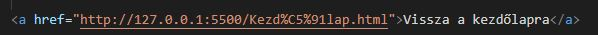

|
A címsorok neve h (heading) betűvel kezdődik. A h1 a legnagyobb, utána csökken a sorrend egészen a h6-ig. |
H1 |
H2 |
H3 |
H4 |
H5 |
H6 |
|
Az 'em'elem, másképp 'b' elem a tartalmát, hangsúlyozottan, kiemelt szövegként jeleníti meg. |
|
A 'strong' elem, másképp 'i' is szövegek formázására való. Ez egy fontosabb szövegrészletet határoz meg. |
| Az 'a' elem 'href' attribútumában adom meg, hogy hova szeretnék átnavigálni. A
parancssor
végére,
a '>'
mögé, de
még a záróelem elé a kiíírandó szöveg kerül. 
Teszteljük: kattints ide! |
|
Ha azt szeretnénk, hogy a hivatkozásunk új ablakban nyíljon meg, a 'target' attribútumot kell használnunk a parancson belül a 'blank' értékkel. |
|
Ha az oldalon belül szeretnék ugrálni, akkor az elemeken belül az 'id' paranccsal beszúrhatok egy nevet az adott részhez. Például: Ha adtunk ID-t az egyes részeknek, az URL mögé '#' után beírva odaugorhatunk az adott részhez. Próbáld ki: #start (Ez elvileg visszanavigál az oldal tetejére.) |

|
Az 'img' elem 'src' (source=forrás) attribútumában adjuk meg a kép forráshelyét, az 'alt' attribútumba pedig a helyettesítő szöveget adjuk meg arra az esetre, ha a kép valamiért nem tud megjelenni. A kép méretét változtathatjuk a 'width' attribútummal. |
|
Ha listákat szeretnék létrehozni, két lehetőség áll rendelkezésemre. Az egyik lehetőség az 'ul' parancs. Ez az Unordered List kifejezésből ered, és egy sima listát kreál, lásd: A másik lehetőség az 'ol' parancs. Ez az Ordered List kifejezésből ered, és egy számozott listát kreál, lásd: |
Sima ista minta |
Számozott lista minta |
|
Ha táblázatot szeretnénk készíteni, a 'table' elemmel tehetjük meg. Címet a 'Caption' paranccsal tudunk adni neki. |
|
A címsort a törzs 'tbody' követi. A táblázaton belül a 'tr' elemmel hozunk létre új sort, soron belül pedig a 'td' paranccsal készítünk cellát. |
|
A táblázat utolsó része a lábjegyzet, azaz 'tfoot', ahol összegzést tudunk elhelyezni az adatokról. |
| A cellák formázására kétféle attribútumot használhatunk a 'td' illetve a 'th' parancsokon belül. | |
| Az egyik a 'rowspan', mellyel a cella magasságát növelhetjük, | a másik pedig a 'colspan', ami a cella szélességére van hatással. |